|
<< Click to Display Table of Contents >> Working with Drawing Tools & Objects |


|
Working with Drawing Tools & Objects
|
<< Click to Display Table of Contents >> Working with Drawing Tools & Objects |
|
There are many customizable Drawing Tools and objects available to use in NinjaTrader charts. Drawing Tools can be applied to individual charts or all open charts displaying the same instrument, and templates for each Drawing Tool can be saved to apply commonly used properties in the future.
Drawing on a Chart Various Drawing Tools are available and customizable within a chart. The image below shows an example of several Drawing Tools applied to a chart.
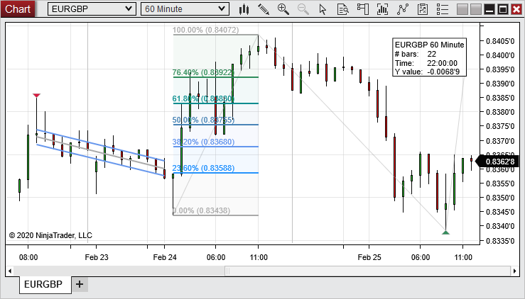Accessing Drawing ToolsDrawing Tools can be accessed in three ways:
•Right mouse click within the chart and select the Drawing Tools menu, then select an individual Drawing Tool from the list that appears •Left mouse click on the Drawing Tools button in the toolbar at the top of the chart, then select the Drawing Tool you wish to use •Press the default or custom Hot Key for a specific drawing tool (see the list of default hot keys under the "Available Drawing Tools" heading below)
Stay in Draw ModeWhen "Stay in Draw Mode" is enabled from the Drawing Tools menu, any drawing tool you select will remain selected after creating a drawing object with that tool. The Drawing Tool can then be used to draw multiple objects without having to access the Drawing Tools menu each time.
Line ToolsThere are multiple Line tools which can be utilized. They can be placed as desired or after placing the first anchor, you can hold SHIFT on the keyboard and move the mouse around to adjust the line in 45 degree increments. This is based on chart scaling at the time the line is placed. Ruler ToolThe Ruler measures the number of bars, length of time, and y-axis distance between two anchor points for a Data Series. The measurement data is attached in a flag at a third, independent anchor point.
To use the Ruler:
1.Select the Ruler Drawing Tool from the Drawing Tools menu 2.If you have more than one Data Series or indicator applied to your chart, first select the Data Series or indicator you wish to measure by left mouse clicking on it 3.Left mouse click on the chart where you wish to place the first anchor point 4.Left mouse click a second time on the chart where you wish to place the second anchor point 5.Left mouse click a third time to set the anchor point for the Ruler display flag.
The anchor points can be relocated by left mouse clicking on an anchor point and dragging it to a new location.
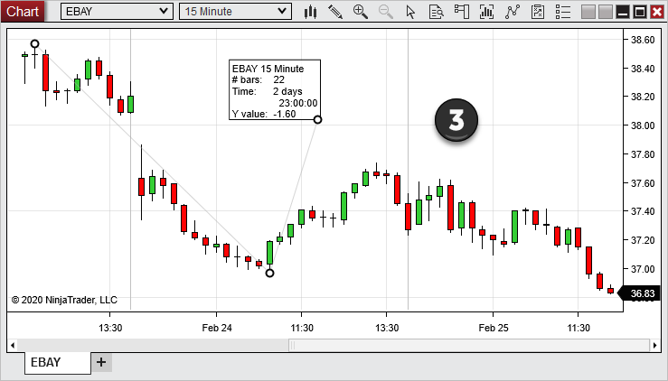
In the image above, we see the ruler tool used to measure a distance of 42 bars over 7 hours, with a y-axis movement of 10.75 points.
Risk-Reward ToolThe Risk-Reward tool can help you to determine the placement of your profit targets to achieve a specific risk/reward ratio on any trade.
To use the Risk-Reward tool:
1.Select the Risk-Reward Drawing Tool from the Drawing Tools menu 2.If you have more than one Data Series applied to your chart, first select the Data Series you wish to work with by left mouse clicking on it 3.Left mouse click on the chart at the entry price of an active, pending, or hypothetical trade 4.Left mouse click a second time on the chart at the point representing the maximum risk you are willing to take on the trade 5.Open the Properties window for the Drawing Object you have just placed (See the "Understanding Drawing Object Properties" section below) 6.Enter your desired Risk/Reward ratio in the "Ratio" field, then select the OK button
Once the object has been drawn and the Risk/Reward ratio set, two lines will extend outward from the first anchor point. The first line, culminating in a number colored red by default, represents the maximum risk you are willing to take, as specified by the second anchor point. The second line, culminating in a number colored green by default, represents the price point determined by multiplying the risk by the chosen Risk/Reward ratio.
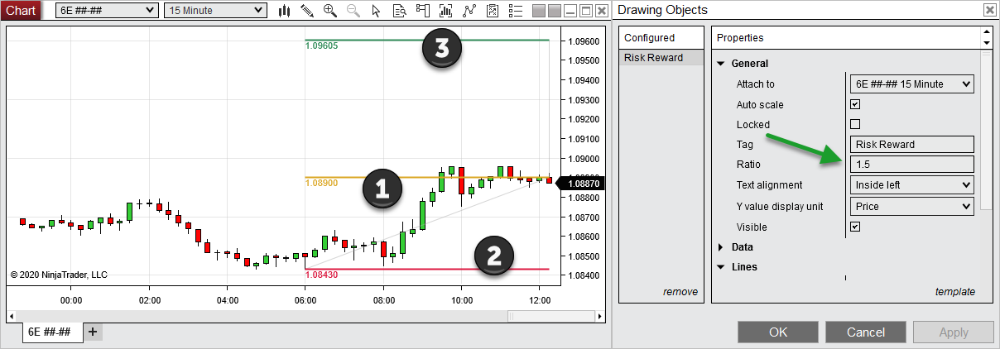
1. In the image above, the first anchor point is set at 1.08900, with a risk/reward ratio of 1.5 2. The second anchor point (the maximum risk) is set at 1.08430 3. Based on the 0.00470 distance between the first and second anchor points (1.08900 - 1.08430), the third anchor point is automatically placed at 1.09605 to achieve a 1:1.5 risk/reward ratio (1.08900 + (0.00470 * 1.5))
Region Highlight X / Region Highlight YThe Region Highlight X and Region Highlight Y tools allow you to highlight or shade an entire horizontal or vertical region on a chart. The Highlight Region X tool will highlight a horizontal region, and the highlighting will extend indefinitely upwards and downwards, keeping the highlight in place if you choose to re-scale the chart on the price axis. The Highlight Region Y tool will highlight a vertical region, and in the same way, will extend the highlighting indefinitely to the right and left, allowing you to draw a region which will continue to cover the entire width of the chart as new bars come in, or as you scroll backwards on the time axis.
To use the Region Highlight X or Region Highlight Y tools:
1.Select one of the two tools from the Drawing Tools menu 2.When using Region Highlight X, click on the chart where you would like to place the first anchor point, then click once more to the left or right of that point to place the second anchor point 3.When using Region Highlight Y, begin the same way, but place the second anchor point above or below the first anchor point
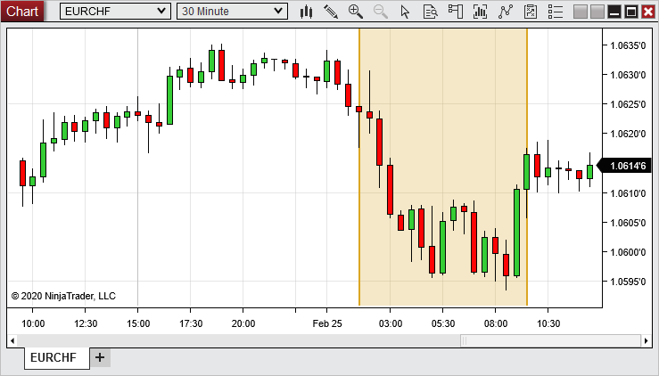
The image above shows the Highlight Region X tool in use, highlighting a 7-leg uptrend.
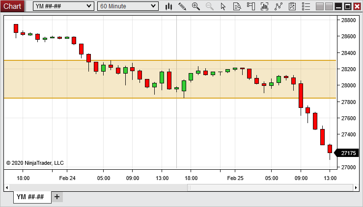
The image above shows the Highlight Region Y tool in use, highlighting a recent consolidation.
Available Drawing ToolsFollowing are the available Drawing Objects and their associated default hot keys found within the Drawing Tools menu:
Applying a Drawing Object to a ChartTo apply a Drawing Object to a chart, using a Drawing Tool:
1.Select a drawing tool from the Drawing Tools menu. The cursor will change to resemble a pen (Right clicking or pressing the "Esc" key will cancel the operation). 2.Left mouse click on the chart where you wish to set the first anchor point. 3.Left mouse click again on the chart for any other necessary anchor points. Once all anchor points are set, the cursor will change back to the cursor type you had previously selected.
Once the Drawing Object is applied to the chart, it can be selected by left mouse clicking on it. Once selected, the object can be moved throughout the chart, and the anchor points can be moved by left mouse clicking and dragging to a new location. |
Snap ModeDrawing Objects can be attached to price and/or time data within the chart by using any of the Snap Mode options available in the Drawing Tools menu:
|
 Understanding drawing object properties
Understanding drawing object properties
Each Drawing Tool can be customized using the Drawing Objects window.
Accessing the Drawing Object PropertiesTo access the Drawing Objects dialogue:
1.Left mouse click on a drawing object to select it (once selected, the anchor points will be visible). 2.Either double left mouse click on the drawing object, or right mouse click and select the Properties menu item.
The Drawing Objects dialogue is also accessible directly from the Drawing Tools menu on the chart toolbar, or by right mouse clicking in a chart, then selecting the Drawing Tools menu item.
Drawing Object Properties MenuProperties vary between drawing objects. There are common properties, as shown in the image below, and there are also specific properties depending on the type of Drawing Object.
The general properties of the drawing object are located in the General section. The image below shows the General section properties for all Drawing Objects, as well as addition properties unique to the Line Drawing Object.
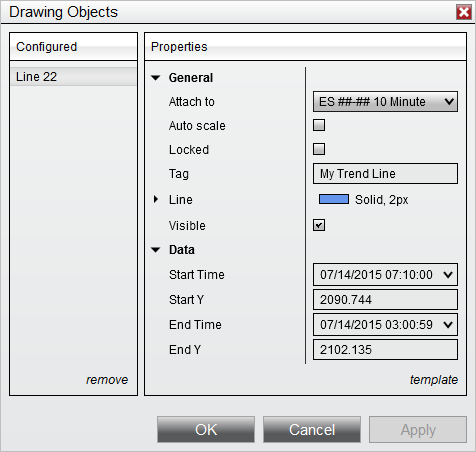
The properties listed below are included for all Drawing Tools, in addition to each tool's unique properties:
The Data section displays the data locations of the Drawing Object anchor points in the chart. These fields can be modified to change the location of the Drawing Object within the chart. Some drawing tools will include additional properties in the Data section, and some may include variations of the following properties:
|
 Understanding Drawing Object templates
Understanding Drawing Object templates
Drawing Object properties can be saved as a template, allowing you to quickly apply those settings to a new Drawing Object of the same type in the future.
What is SavedThe following properties are saved in the General section:
•Auto scale •Color •Dash Style •Width
Attach to will default to the Data Series on which the object is drawn. Tag will be automatically updated for each new drawing object. Locked will default to False. Visible will default to True. Properties within the Data section will NOT be saved.
Saving Drawing Object TemplatesTo save Drawing Object settings:
1.Open the Drawing Object Properties window by either double left mouse clicking on the drawing object or right mouse clicking and selecting Properties. 2.Set desired parameters 3.Left mouse click on the template text located in the bottom right of the Properties dialog. Selecting save will open the Save window, in which you can enter a name for a new template, select an existing template to overwrite it or could click Save as default to save your settings as the new default applied settings for that drawing object. 4.Click the Save / Save as Default button when finished
If you wish to load a previously saved template, you can select the load option after left mouse clicking on the template text. If you change your settings and later wish to go back to the original settings, you can left mouse click on the template text and select the reset option.
In the image below, a template will be saved for the Ray drawing tool.
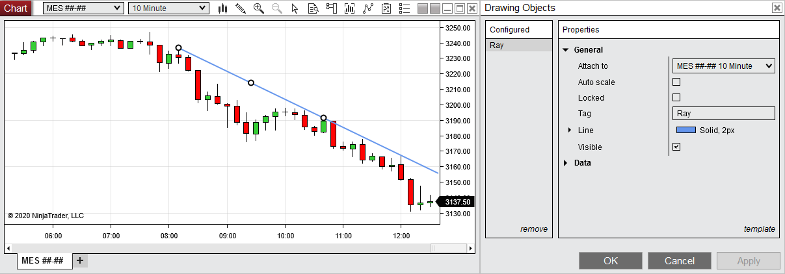
In the image below, we can enter a name for the new Ray template and save it for future use.
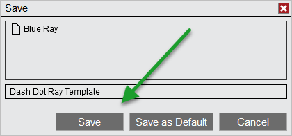
Loading a Drawing Object TemplateA Drawing Object template that was previously saved can be applied to any Drawing Object of the same type. For example, a template for the Fibonacci Extensions tool can be applied to a Fibonacci Extensions Drawing Object, but not to a Line Drawing Object.
To load a Drawing Object template:
1.Left mouse click on the template text, then select the load option. 2.The Load window will appear. Select the template to load from the list of templates, then press the Load button.
Removing a Drawing Object TemplateTo remove a Drawing Object template from the list of saved templates:
3.Left mouse click on the template text, then select either the Save or Load menu items 1.The Save or Load window will appear, depending on which menu item you selected. Right mouse click the template for removal from the list of templates, then select the Remove menu item.
Renaming a Drawing Object TemplateTo rename a Drawing Object template from the list of saved templates:
4.Left mouse click on the template text, then select either the Save or Load menu items 2.The Save or Load window will appear, depending on which menu item you selected. Right mouse click the existing template in the list, then select the Rename menu item.
In the image below, we can either remove or rename the selected Drawing Object template.
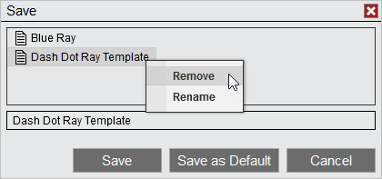 |
Removing Drawing Objects To remove a single Drawing Object:
1.Left mouse click on the Drawing Object to select it (when selected, the anchor points will appear) 2.Press the Delete key on the keyboard or right mouse click on the drawing object and select the Remove menu item
To remove multiple Drawing Objects at the same time:
1.Select the Drawing Tools menu via right mouse clicking in chart or via left mouse clicking the Drawing Tools icon in the chart toolbar 2.Left mouse click on the Remove All Drawing Objects menu item, and dialogue box will appear to confirm that you wish to remove all drawing object. 3.Click the Yes button to confirm
|
 Understanding local vs. global drawing objects
Understanding local vs. global drawing objects
Drawing Objects can be applied to a specific chart (local), or to all charts of the same instrument (global). How to Enable a Global Drawing ObjectTo enable a Global Drawing Object:
1.Apply a Drawing Object to the chart (see the "How to draw on chart" section above) 2.Access the Drawing Object's properties from the Drawing Objects dialogue (see the "Understanding drawing object properties" section above) 3.Locate the "Attach to" drop down menu and select "Instrument name" (All charts)
The Drawing Object will now be applied to all charts for that specific instrument as well as any new charts opened for that instrument. Global Drawing Objects are stored even when a chart of the instrument is not open.
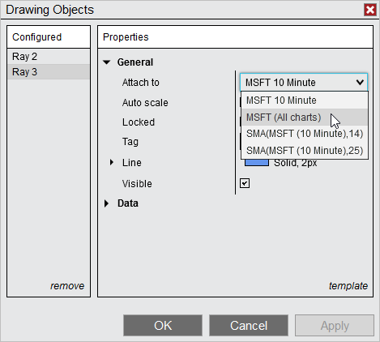
|
 Understanding drawing object levels
Understanding drawing object levels
Drawing Object LevelsDrawing Tools that include lines drawn at multiple, customizable price levels, such as Fibonacci Retracements, include a "Levels" property which can be used to add, remove, or edit levels displayed in objects drawn with that Drawing Tool.
The following Drawing Tools include a "Levels" property in the Drawing Objects dialogue:
•Fibonacci Retracements •Fibonacci Extensions •Fibonacci Time Extensions •Fibonacci Circle •Andrew's Pitchfork •Trend Channel
Managing Drawing Object LevelsTo add, remove, or edit levels, first left mouse click on a Drawing Object to select it, then either double-left mouse click the Drawing Object, or right mouse click it and select the Properties menu item to open the Drawing Objects dialogue. The Levels field will display the number of levels currently applied. Left mouse click within this field to open the Levels dialogue, in which you can manage the levels applied to that object.
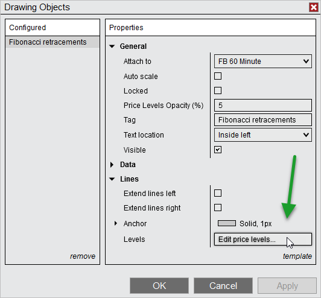
Adding Drawing Object LevelsIn the Levels dialogue, click the add option to add a new price level. A new level will be added to the bottom of the list in the "Configured" section, and will be automatically selected for editing. You can then customize the new level's line color, dash style, width and value (in percent) the "Properties" section. You can also enable or disable visibility of the level in this section.
Removing Drawing Object LevelsTo remove a level from within the Levels dialogue, first select the level you wish to remove from the list, then select the remove option.
Editing Drawing Object LevelsTo edit an existing level from within the Levels dialogue, first select the level you wish to edit, then change any of the properties for that level in the Properties section. When all properties are set to your desired values, click the OK button to save the changes and close the window.
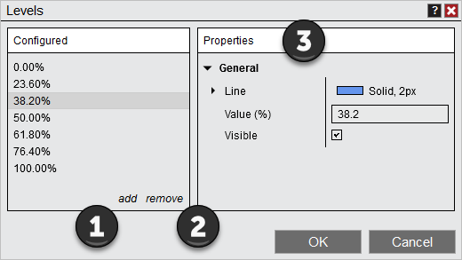
1. Add new price levels with the add option 2. Remove existing price levels with the remove option 3. Edit properties for new or existing levels in the Properties section |